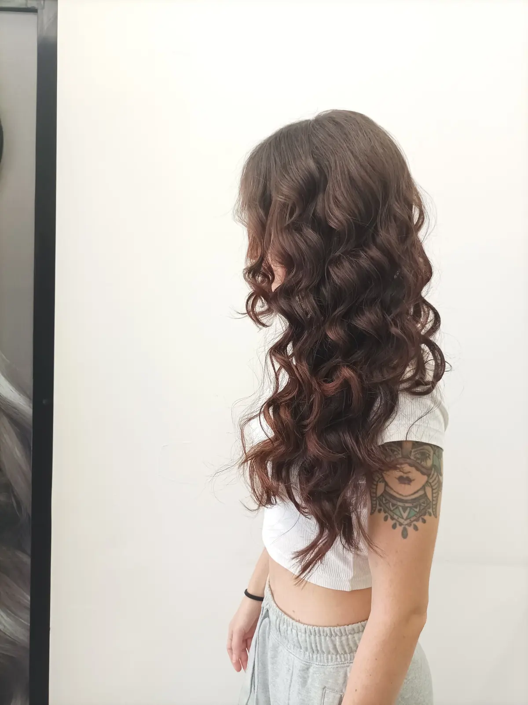
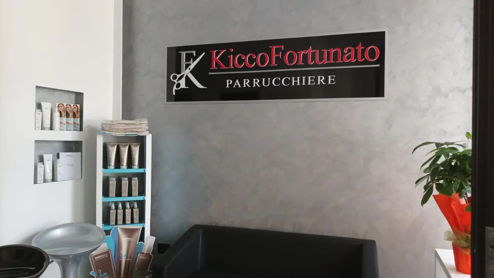
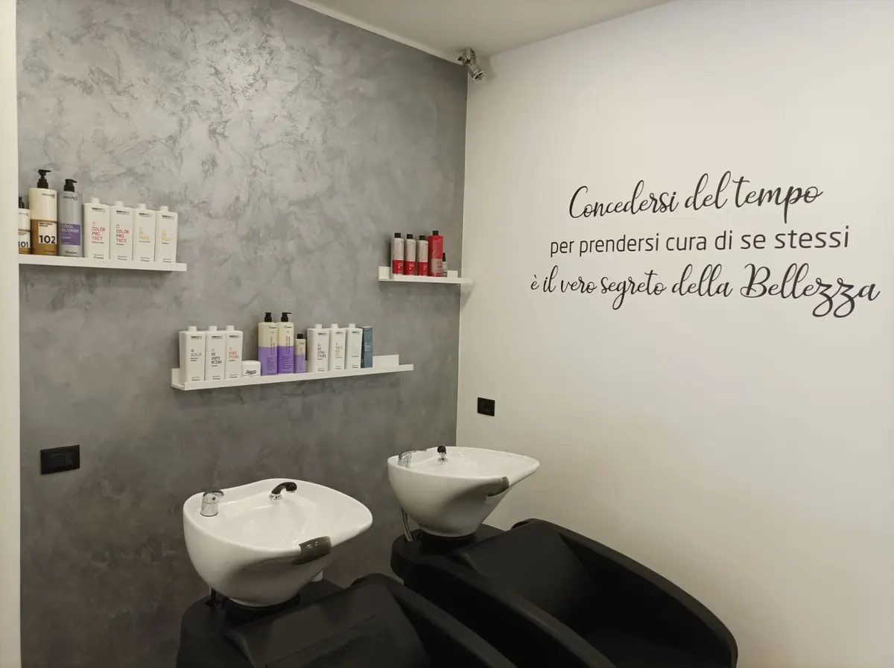

Capelli lunghi a boccoli castani, visti di lato.

Parrucchiere a Salerno, in Via Roberto Santamaria, 35.
5,0217 recensioni GoogleVia Roberto Santamaria, 35, 84128 Salerno, SA

Capelli lunghi a boccoli castani, visti di lato.

I lavaggi con la scritta sulla parete grigia.
La reception con l'insegna «Kicco Fortunato Parrucchiere». 5,0 su 5 su Google, 217 recensioni.
5,0 su 5 · 217 recensioni su Google. Qui sotto alcune, riportate senza modifiche (i nomi sono abbreviati).
Conosco kicco da quando aveva 16 anni e ritrovarlo è stato emozionante. In tutti questi anni è diventato un professionista incredibile.
Sono arrivata con i capelli rovinatissimi e mi ha fatto una
ricostruzione pazzesca, me li ha letteralmente salvati. Sani, morbidi, luminosi sono tornati nuovi.
Si vede tutta la sua esperienza e la passione per questo lavoro.
Complimenti enormi anche a Matteo, bravissimo e super gentile. Una squadra davvero top.
Se cercate mani esperte e persone di cuore, siete nel posto giusto.
Consigliatissimi! 🫶
Sono stata per la prima volta in questo centro di bellezza per i capelli e non posso far altro che ringraziare per l’ accoglienza e la super professionalità del titolare. Trattamento che nutre e rigenera dando vita ad un capello come il mio ormai danneggiato. Risultato finale rinvigorito, lucente e rimpolpato. Consigliatissimo!!!
Trovare un professionista così è una fortuna rara. Fin dal primo momento si respira un'atmosfera unica, che unisce una grandissima professionalità a una profonda umanità. Si percepisce subito lo studio e la preparazione tecnica che ci sono dietro il suo lavoro: ti spiega ogni dettaglio facendoti capire con chiarezza la scelta di ogni trattamento. In questo salone mi sento totalmente coccolata e viziata, un vero e proprio rituale di benessere in cui mi sento letteralmente rinata. Lo raccomando di cuore a chi cerca un vero professionista!
Esperienza super positiva! Avevo i capelli spenti, opachi e con riflessi aranciati indesiderati. Dopo il trattamento il risultato è stato incredibile: capelli luminosi, brillanti e dal colore finalmente naturale e uniforme. L'effetto arancio è completamente sparito! Staff professionale, attento e capace di capire davvero cosa desideravo. Consigliatissimo!
Ciò che distingue davvero il salone di Chicco Fortunato è l’atmosfera: si respira un’aria serena e accogliente, un raro equilibrio tra professionalità e una capacità innata di instaurare un rapporto autentico e disteso con la cliente. Chicco possiede quella dote preziosa che è l’umiltà unita alla competenza; sa ascoltare, consigliare con tatto e mettersi al servizio della bellezza altrui con una gentilezza che mette subito a proprio agio.
Un applauso speciale va allo staff, un team di ragazzi eccezionali che si distingue per educazione, cura del dettaglio e una capacità d'accoglienza che ti fa sentire subito a casa. È evidente che lavorano con passione e dedizione, garantendo che ogni momento della permanenza in salone sia piacevole e curato nei minimi particolari.
Per quanto riguarda il servizio, la qualità dei prodotti utilizzati è di prim'ordine e si percepisce tutta la differenza nella salute e nella lucentezza del capello. Il risultato finale è stato impeccabile, esattamente come lo desideravo, se non meglio: i miei capelli non sono mai stati così sani e luminosi.
Complimenti!
| Lunedì | Chiuso |
|---|---|
| Martedì | 09:00–19:00 |
| Mercoledì | 09:00–19:00 |
| Giovedì | 09:00–19:00 |
| Venerdì | 09:00–19:00 |
| Sabato | 09:00–19:00 |
| Domenica | Chiuso |
Kicco Fortunato Parrucchiere
Via Roberto Santamaria, 35, 84128 Salerno, SA
389 482 0197
Orari della scheda Google: nei festivi possono cambiare, chiamate per conferma.
Via Roberto Santamaria, 35, 84128 Salerno, SA
Un messaggio su WhatsApp, o una telefonata: vi risponde Kicco Fortunato.